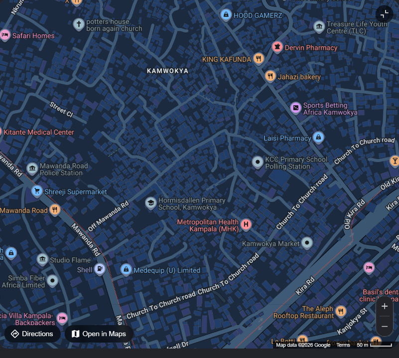

Visual layout of reported active dumpsites (Red) and cleared community zones (Green) across Kamwokya II Parish.

Active: Behind Kamwokya Market Active: Kisenyi II Trench Active: Undeveloped Plot B Cleared: Main Drainage Channel Cleared: Church Area LaneBehind Kamwokya Market: Heavy accumulation of organic vendor waste and polythene bags blocking side drains.
Kisenyi II Trench: Nighttime domestic dumping causing localized flooding during rainstorms.
Main Drainage Channel: 18 tons of silt and plastic removed during the Saturday youth drive.
Church Area Lane: Residents transitioned to the nearby 1,000 UGX KCCA community skip.